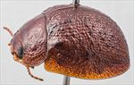
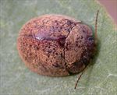
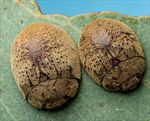
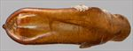
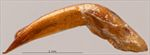
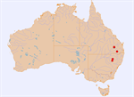

Click on images to enlarge


Male, Pilliga Scrub, Narrabri, New South Wales


Male, Millmerran, S.E. Queensland


Female and male, Miles, Queensland


Aedeagus, dorsal view, Millmerran, S.E. Queensland


Aedeagus, lateral view, Millmerran, S.E. Queensland


Distribution
Name
Trachymela sp. Ta111
Reference specimen
2001-202, Pilliga Scrub, Narrabri, New South Wales.
Adult Description
Length: ♂ 7.2–8.2 mm (n=7), ♀ 7.8–8.7 mm (n=8).
Colouration:
- Head: mid-brown or reddish-brown, fronto-clypeal suture sometimes at least partially outlined in black, some black rarely present on clypeus adjacent to labrum, labrum yellow-brown, mandibles black-tipped; antennomeres 1–3 straw-brown, 4–11 concolorous or slightly darker, outer 2–5 antennomeres usually with distal extremes darker or (rarely) black.
- Pronotum: brown, concolorous with head, usually uniformly so, sometimes with a round black macula in centre of foveal area, rarely a small black macula on each side of discal area.
- Scutellum: brown, concolorous with or slightly lighter (rarely fractionally darker) than adjacent area of pronotum.
- Elytra: brown, concolorous with pronotum, with a scatter of dark brown to black (rarely, only fractionally darker than surrounding surface) pimple-like verrucae scattered relatively uniformly over much of disc, with the density lower in the area of the antero-median depression and a higher concentration just posterior to the depression where the verrucae almost invariably line up in an uneven, transverse line with many of the verrucae tending to be extended slightly laterally, verrucae in posterior half of disc usually form relatively open longitudinal series, the most prominent such series is continuous with one starting at anterior margin, halfway between scutellum and humeral callus, punctures concolorous with or slightly darker than interstices, humeral callus black, or less often, dark brown.
- Venter & Legs: completely mid-brown, sometimes with parts of ventrites, especially margins, slightly darker, legs concolorous, epipleura light-brown.
- Cuticular Wax: uniformly light-brown or mid-brown and evenly or slightly unevenly distributed layer that can be quite dense but does not conceal the larger, black verrucae on elytra.
Morphology:
- Shape: profile uniformly rounded from scutellum to apex, with at most a slight increase in curvature near apex, moderately high (H: ♂ 43–45% BL, ♀ 43–49% BL), elytral summit clearly in front of middle of elytral margin.
- Head: puncture size variable (pd ≈ 1.5–3× ef), mixed sizes often present, and quite evenly and densely distributed; antennae moderate to long (AL: ♂ 39–42% BL, ♀ 30–34% BL), filiform.
- Pronotum: almost evenly curved transversely over discal area, with foveal depression usually absent or very shallow, a small, round pimple-like and more finely punctured or even smooth elevation almost always present behind centre of each eye, puncturation variable, usually clearly impressed and similar in size as on head, sometimes much finer than on head or more vaguely impressed, very evenly distributed and dense in discal area, interstices in discal area usually smooth, never obscuring punctures, punctures becoming much coarser towards margin; front margins join lateral margins in a smoothly rounded right-angle, with lateral margin usually straight or very lightly curved for some distance before curving smoothly and gradually towards rear margin.
- Scutellum: surface slightly rough, punctured, punctures usually similar in size or somewhat smaller than those on adjacent surface of pronotum and at similar density.
- Elytra: evenly curved transversely over surface of disc with barely to noticeably explanate margins, antero-median depression shallow, noticeable mostly because of the row of verrucae that terminate it posteriorly, punctures moderately large and relatively evenly distributed, rarely partially obliterated by rugose interstices, many small, round and well-defined verrucae, some slightly extended laterally, some with a very fine central puncture, are present on disc, arranged as described under colouration above, interstices usually relatively smooth, rarely more convex, elytral suture slightly carinate in posterior third, lateral margin almost straight throughout, surface continuous or very slightly discontinuous under humeral callus; vertical extension of epipleura large (HCE/PW = 0.38–0.43).
- Venter: prosternal process almost parallel-sided before widening towards posterior, open or very lightly closed anteriorly, a scatter of short setae on prosternal process, absent from mesoventrite, a single seta on anterior and median trochanter; front edge of metaventrite beveled, truncate; inner epipleura lightly setose, setae most evident opposite 2nd to 4th abdominal segments, usually much more sparse or absent near apex, rarely completely absent.
Male Genitalia (Aedeagus):
- Dimensions: moderate-sized (LPE = 28–32% BL).
- Dorsal view: shaft either almost parallel-sided for much of length or slightly sinuate with sides concave, always broader, sometimes barely so, at ostium from where sides converge towards apex in a gradual and smooth arc, dorsal surface with well-defined dorso-median channel and dorsolateral channels resulting in two long dorsal ostial processes protruding far towards apex in the oval-shaped (length:width ≈ 3:2) ostial depression; tip small and smoothly triangular.
- Lateral view: shaft curved sharply through about 45° near base, then ventral surface almost straight before an almost imperceptible downward curve near apex, dorsal surface straight for about half this distance, then converging evenly towards ventral surface, tip deflexed.
Immature Stages
Unknown.
Similar species
- Ta110: this species is very variable in the distribution and density of elytral verrucae, and some specimens can resemble those of Ta111 very closely. It tends to have many more transversely elongated verrucae and ridges, particularly in the region between the humeral callus and posterior of antero-median depression. In addition, it almost invariably has a much more extensive area of black in the foveal region of the pronotum. The aedeagi of the two species are quite different.
- Ta146:
Notes
- Host Associations: Most specimens of Ta111 have been collected from Eucalyptus chloroclada (Symphyomyrtus : Exsertaria), with unspecified smooth-barked Eucalyptus also recorded as host.
Copyright © 2026. All rights reserved.